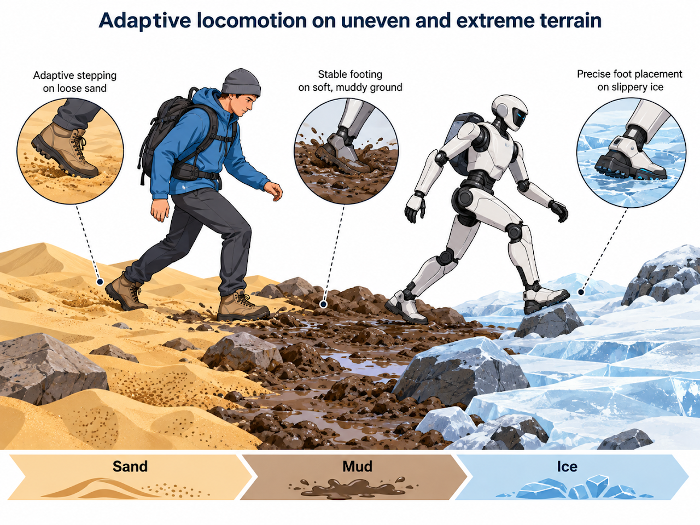
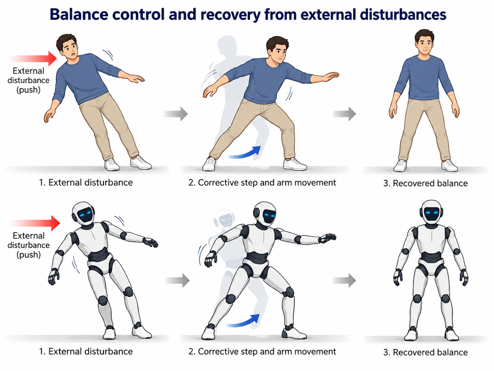
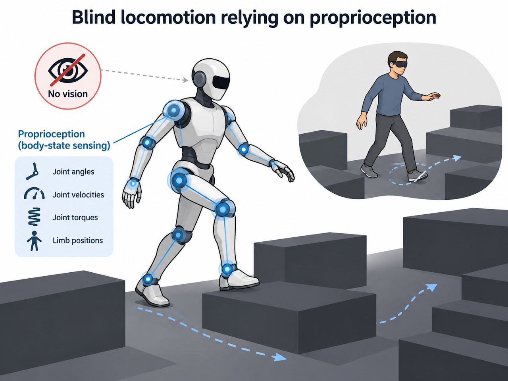
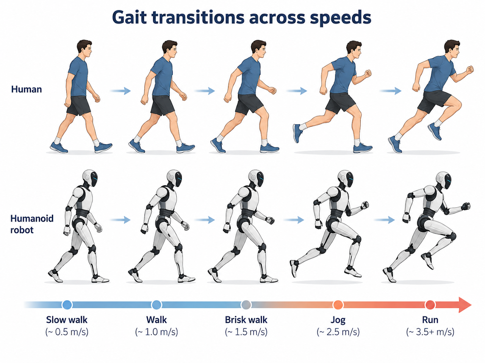
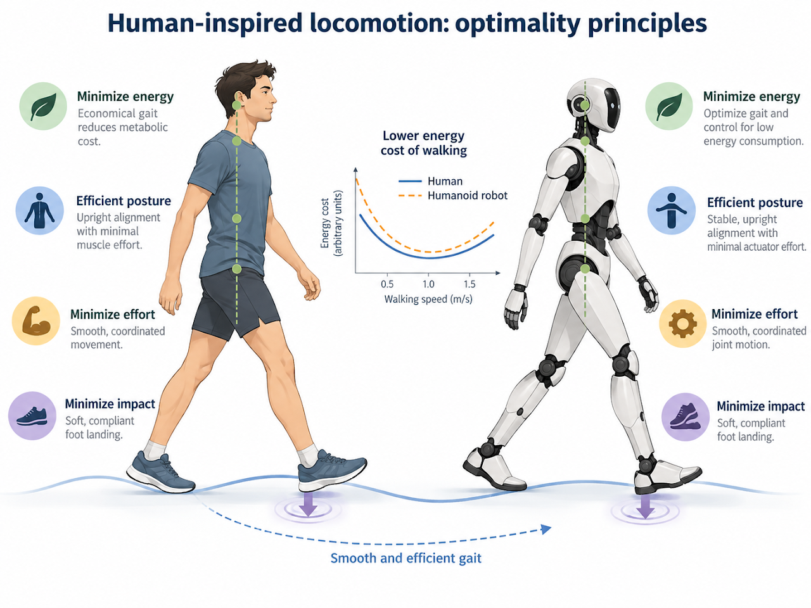
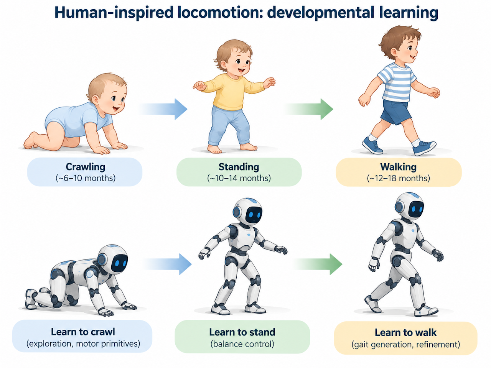
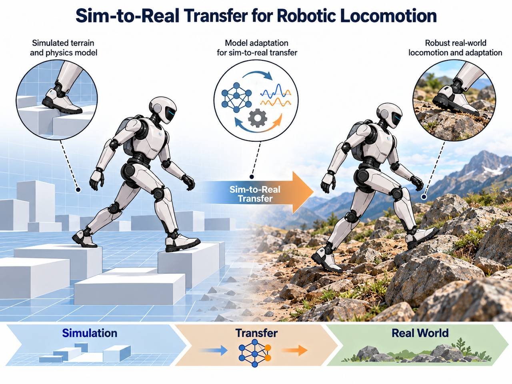

Research
Research Interests
My research focuses on understanding human locomotion and developing robust, adaptive locomotion strategies for humanoid robots, with an emphasis on stability, adaptation to challenging terrain, and efficient movement. The long-term goal is humanoid robots that can work reliably in environments too dangerous or difficult for humans.
저의 연구 관심 분야는 인간의 보행을 이해하고, 휴머노이드 로봇을 위한 강인하고 적응적인 보행 전략을 개발하는 데 있습니다. 특히 인간과 로봇이 어떻게 안정성을 유지하고, 까다로운 환경에 적응하며, 효율적으로 움직이는지에 관심이 있습니다. 장기적으로는 인간에게 위험하거나 접근하기 어려운 환경에서도 신뢰성 있게 작업할 수 있는 휴머노이드 로봇 개발에 기여하는 것이 목표입니다.
1. Robust Locomotion in Challenging Environments

Adaptive locomotion on uneven and extreme terrain
Locomotion strategies for surfaces such as sand, mud, and ice — adjusting movement to the terrain while maintaining stability.
모래, 진흙, 빙판 등 까다로운 지면에서도 휴머노이드 로봇이 이동할 수 있도록 하는 적응형 보행 전략을 탐구합니다. 다양한 지형 조건의 변화에 따라 움직임을 조절하면서 안정성과 강인성을 유지하는 데 중점을 둡니다.

Balance control and recovery from external disturbances
How humans and robots recover from external pushes or impacts, and control strategies that prevent falls.
인간과 휴머노이드 로봇이 외부에서 가해지는 밀림이나 충격과 같은 예상치 못한 외란에 대해 어떻게 균형을 유지하고 회복하는지 이해하고자 합니다. 이를 바탕으로 낙상을 방지하기 위해 신속하고 효과적으로 균형을 회복할 수 있는 제어 전략을 개발하는 데 관심이 있습니다.

Blind locomotion relying on proprioception
Walking when vision is unavailable, using proprioceptive feedback such as joint states and body motion.
시각 정보가 제한되거나 사용할 수 없는 환경에서도 휴머노이드 로봇이 이동할 수 있도록 하는 연구입니다. 관절 상태와 신체 움직임 등의 고유수용감각 피드백을 활용하여 시각적 인식에 의존하지 않고 안정적인 보행을 유지하는 방법을 탐구합니다.
2. Human-Inspired Locomotion & Motor Learning

Gait transitions across speeds
How gait changes with speed, especially the transition from walking to running.
이동 속도가 증가함에 따라 보행 패턴이 어떻게 변화하는지, 특히 걷기에서 달리기로 전환되는 과정에 관심이 있습니다. 다양한 이동 속도에 적응하면서 부드럽고 안정적인 보행 패턴 전환을 구현하는 것을 목표로 합니다.

Optimality principles
How humans select efficient gaits by balancing energy, effort, and impact, and how these principles can inform robot gait generation.
인간이 에너지 소비, 신체적 노력, 충격력 등을 조절하면서 어떻게 효율적인 보행 패턴을 자연스럽게 선택하는지 탐구합니다. 이러한 원리를 바탕으로 휴머노이드 로봇의 보행을 더욱 효율적이고 자연스럽게 만드는 방법을 연구하고자 합니다.

Developmental learning
How human motor skills progress from crawling and standing to walking, and learning strategies that let robots acquire increasingly complex skills.
인간이 기어가기와 서기에서 걷기에 이르기까지 운동 능력을 점진적으로 발달시키는 과정을 탐구합니다. 이러한 발달 과정에서 영감을 받아 휴머노이드 로봇이 점차 복잡한 운동 능력을 습득할 수 있도록 하는 학습 전략을 연구하고자 합니다.
3. Sim-to-Real Transfer for Robotic Locomotion

Methods for narrowing the gap between simulation and real robots, combining robot dynamics, physics-based modeling, and learning-based approaches.
로봇 보행에서 시뮬레이션과 실제 환경 사이의 차이를 줄이는 방법을 탐구합니다. 로봇 동역학, 물리 기반 모델링, 학습 기반 접근법을 활용하여 시뮬레이션에서 개발한 보행 전략을 실제 로봇에도 안정적으로 적용하는 것을 목표로 합니다.
Research Experience
Undergraduate Research →
Sejong University · Ankle prosthesis, rehabilitation robot, quadruped SLAM, patrol robot
Graduate Research
To be added later.